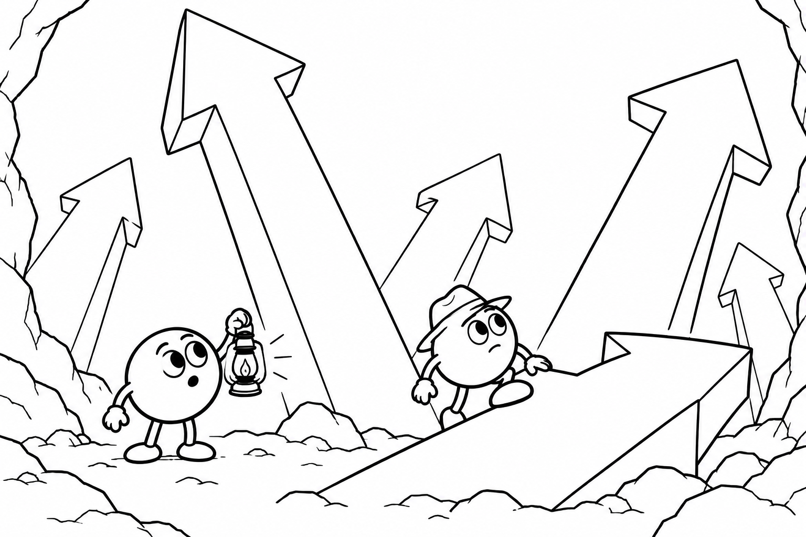

01 · The prediction task1 / 18
Learn from the words around a word.
Skip-gram word2vec1Scroll to unfold · scroll back to revisit

kingmanqueenwomanWhat the model leaves us with
The input matrix stores a vector for every word. The output matrix makes those vectors useful for predicting context during training. Training both together can produce structure that we can reuse after the prediction task is finished.
1 Word2vec also has an alternative architecture, continuous bag of words (CBOW), which predicts the center word from the surrounding context words. It is not shown here.
2 This lesson uses full softmax and omits bias terms. The six-word, two-coordinate model has illustrative starting weights and demonstrates the calculations; it is not a useful semantic model. The final geometric sketches are separate illustrations, not results fitted to these sentences.
Visual and conceptual inspiration: Chris Olah (2014), Deep Learning, NLP, and Representations. The central idea is that useful representations can emerge from learning a prediction task.
Tomas Mikolov, Kai Chen, Greg Corrado, and Jeffrey Dean (2013), Efficient Estimation of Word Representations in Vector Space.
Network architecture and derivation: Xin Rong, word2vec Parameter Learning Explained, especially the skip-gram model and its linear hidden layer.
Beyond Word2vec: Devlin et al. (2019), BERT, illustrates richer, contextual representations that can support word-level tasks. Its internal representations are for tokens, which may be parts of words. Reimers and Gurevych (2019), Sentence-BERT, illustrates models trained to represent whole texts. A more advanced model need not change the unit you embed: choose words, passages, or documents according to the task.
For an API example, see OpenAI’s vector embeddings guide (checked October 27, 2026). A request supplies text and an embedding model; the response includes one vector for each supplied text. This runs the trained model rather than training a new model for each request.